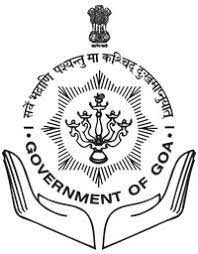
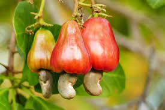
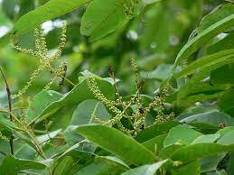
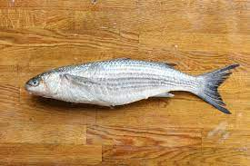

Goa is a state on the southwestern coast of India within the Konkan region,
geographically separated from the Deccan highlands by the Western Ghats. It is located between the Indian
states of Maharashtra to the north and Karnataka to the east and south, with the Arabian Sea forming its western
coast. It is India's smallest state by area and its fourth-smallest by population. Goa has the highest GDP per
capita among all Indian states, two and a half times as high as the GDP per capita of the country as a
whole. The Eleventh Finance Commission of India named Goa the best-placed state because of its
infrastructure, and India's National Commission on Population rated it as having the best quality of life in
India (based on the commission's “12 Indicators”). It is the third-highest ranking among Indian states in
the human development index.
Panaji is the state's capital, while Vasco da Gama is its largest city. The historic city of Margão in Goa still
exhibits the cultural influence of the Portuguese, who first voyaged to the subcontinent in the early 16th
century as merchants, and conquered it soon thereafter, whereupon Goa became an overseas territory of the
Portuguese Empire, part of what was then known as Portuguese India, and remained as such for about 450 years
until it was annexed by India in 1961.Goa's official language, which is spoken by a majority of its
inhabitants, is Konkani.
Goa is visited by large numbers of international and domestic tourists each year because of its white-sand
beaches, active nightlife, places of worship, and World Heritage-listed architecture. It also has rich flora and
fauna because it lies very close to the North Western Ghats rainforests, one of the rare biodiversity hotspots
of the world.
| Country | India |
| Formation of State | 30 May 1987 |
| Capital Largest city District |
Panaji Vasco da Gama 2 |
Government
|
Government of Goa P.S.Sreedharan Pilai Pramod Sawant(BJP) Unicameral(40 seats) Rajya Sabha 1 Lok Sabha 2 Parimal Rai,IAS |
Area
|
3,702 km2 (1,429 sq mi) 28th |
Population(2011)
|
1,458,545 26th |
| Website | www.goa.gov.in |
| State Emblem | Government Of Goa |  |
| State Bird | Flame-Throated Bulbul | |
| State Flower | Jasmine |
|
| State Fruit | Cashew |  |
| State Tree | MAtti Terminalia Crenulata |  |
| State Fish | Grey Mullet |  |